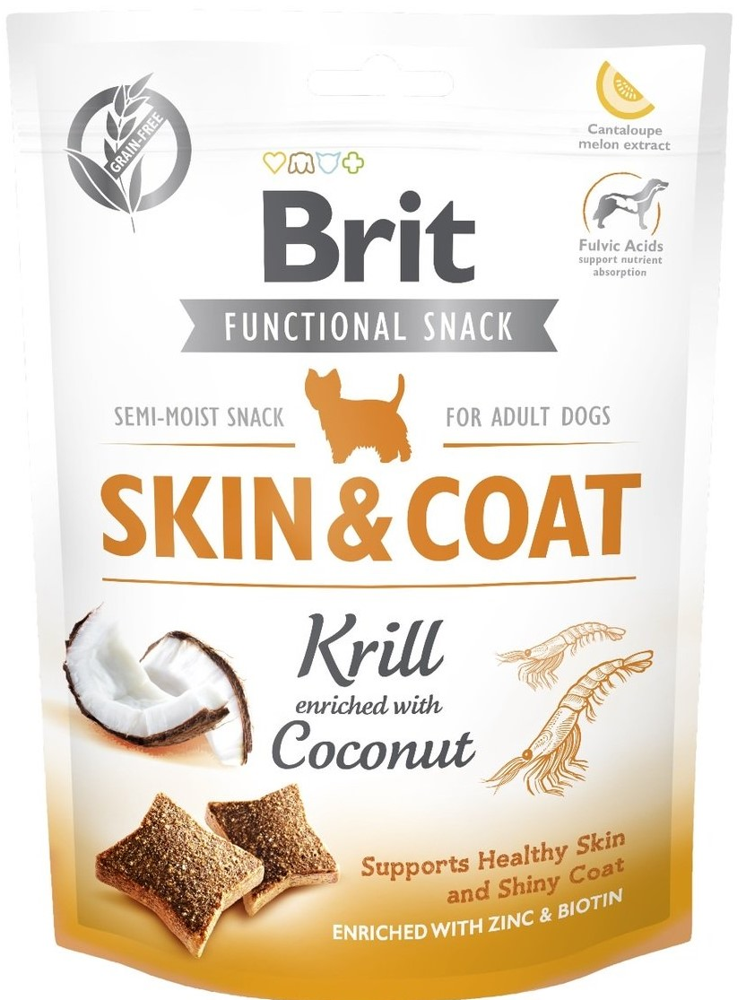

Голдън ретривър, който е умерено активен, с тегло около 32 кг, трябва да пие между 1-2 литра вода в зависимост от сезона. Най-добре е да предложите прясна вода, вместо да допълвате купичката му с вода. По-добре да я излеете и да я напълните с прясна вода.
Кучетата трябва да ядат основно храна за кучета, която е балансирана и покрива всичките им хранителни нужди. Допълнително може да му се давата малко кучшки лакомства и по едно лакомство за дъвкане на ден. Понякога може да им се дават някои човешки храни от безопасни съставки, но в много малки количества и под надзор.
Когато купувате лакомства за куче, трябва да внимавате какво изибирате и да взимате само качествени, здравословни лакомства. Търсете „високо съдържание на месо/риба" и "без зърна". Проверете съставките отзад за да се уверите, че месотое е иснтинско и в големи количества. Препоръчаните марки са Britcare и Carnilove. Carnilove е малко по-евтино на килограм. И двете могат да се намерят в Maxipet. Друга добра марка са tundrasnacks, но са малко по-скъпи.
Понякога може да им се дават някои човешки храни от безопасни съставки, но само в много малки количества и под надзор. По-долу можете да намерите някои от тези безопасни храни, които Бени обича.
Кучетата могат да ядат някои плодове, но не забравяйте да премахнете семките, например на диня и ябълка.
Ако някой от артикулите в списъка по-долу се консумира, моля, консултирайте се с ветеринар!
Солта е отровна за кучета и може да доведе до повръщане, диария, намален апетит, летаргия, некоординация, прекомерна жажда или уриниране. В тежки случаи са възможни гърчове, кома и дори смърт.
Семейството лук, независимо дали е сух, суров или варен, е особено токсичен за кучета и може да причини стомашно-чревни дразнение и увреждане на червените кръвни клетки. Признаците на заболяване не винаги са незабавни и могат да се появят до няколко дни по-късно.
Шоколадът и какаото съдържат стимулант наречен теобромин (черният шоколад има най-високо съдържание), който е токсичен за кучета и може да причини бъбречна недостатъчност.
Ядките макадамия съдържат токсин, който може да засегне мускулите и нервната система на вашето куче, което води до слабост, подуване на крайниците и задъхване.
Царевицата на коча може потенциално да бъде фатална. Въпреки че царевицата се усвоява от кучета, кочанът може да причини запушване в червата на вашето куче.
Растенията от авокадо съдържат вещество наречено персин, което се намира в листата, плода и костилката и може да причини повръщане и диария при кучета.
Диетичните продукти без захар, като дъвки и газирани напитки, обикновено съдържат ксилитол. Ако кучето изяде нещо с ксилитол, то може да изпадне в хипогликемия, която е свързана с чернодробна недостатъчност и нарушения на кръвосъсирването.
Има огромно въздействие върху кучетата дори в малки количества. Напитката не само причинява интоксикация, както при хората, но може да доведе до заболяване, диария и дори увреждане на централната нервна система.
Костите трябва да се избягват на всяка цена. Те могат лесно да се раздробят на малки остри пърченца и в големи количества причиняват запек, а в най-лошия случай, перфорация на червата или стомаха, която може да бъде фатална.
Гроздето и стафидите могат да причинят тежко увреждане на черния дроб и бъбречна недостатъчност.